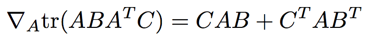

Make sure you check the syllabus for the due date. Please use the notations adopted in class, even if the problem is stated in the book using a different notation.
We are not looking for very long answers (if you find yourself writing more than one or two pages of typed text per problem, you are probably on the wrong track). Try to be concise; also keep in mind that good ideas and explanations matter more than exact details.
Submit all code files Dropbox (create folder HW1 or similar
name). Results can be pdf or txt files, including plots/tabels if
any.
"Paper" exercises: submit using Dropbox as pdf, either typed or
scanned handwritten.
DATATSET 2: Spambase dataset available from the UCI Machine Learning Repository.
You can try to normalize each column (feature) separately with
wither one of the following ideas. Do not normalize labels.
Use K-fold cross-validation :
Using each dataset, build a decision tree (or regression tree) from the training set. Since the features are numeric values, you will need to use thresholds mechanisms. Report (txt or pdf file) for each dataset the training and testing error for each of your trials:
Using each of the two datasets above, apply regression on the
training set to find a linear fit with the labels. Implement
linear algebra exact solution (normal equations).
DHS chapter8,
a) Prove that for any arbitrary tree, with possible unequal
branching ratios throughout, there exists a binary tree that
implements the same classification functionality.
b)
Consider a tree with just two levels - a root node
connected to B leaf nodes (B>=2) . What are then upper
and the lower limits on the number of levels in a functionally
equivalent binary tree, as a function of B?
c) As in b), what are the upper and lower
limits on number of nodes in a functionally equivalent binary
tree?
Write down explicit formulas for normal equations solution
presented in class for the case of one input dimension.
(Essentially assume the data is (x_i,y_i) i=1,2,..., m and you are looking for h(x) = ax+b that realizes the minimum mean square error. The problem asks you to write down explicit formulas for a and b.)
HINT: Do not simply copy the formulas from here (but do read the article): either take the general formula derived in class and make the calculations (inverse, multiplications, transpose) for one dimension or derive the formulas for a and b from scratch; in either case show the derivations. You can compare your end formulas with the ones linked above.
With the notation used in class (and notes), prove that
